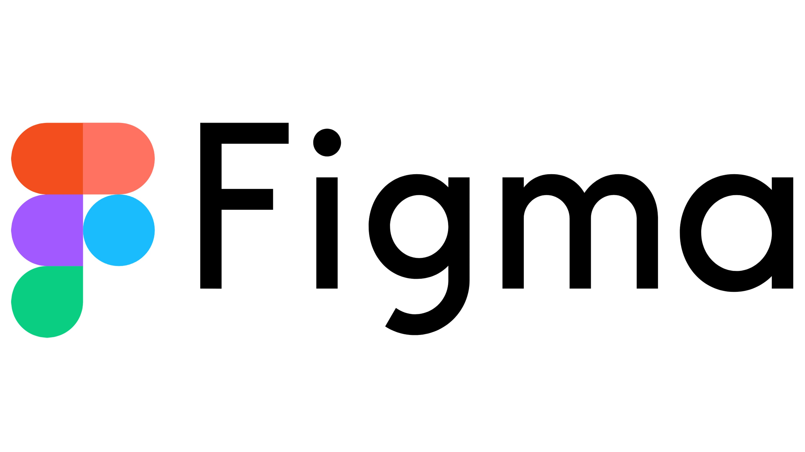
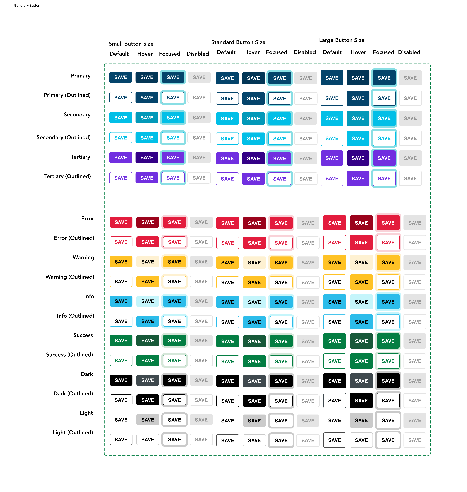
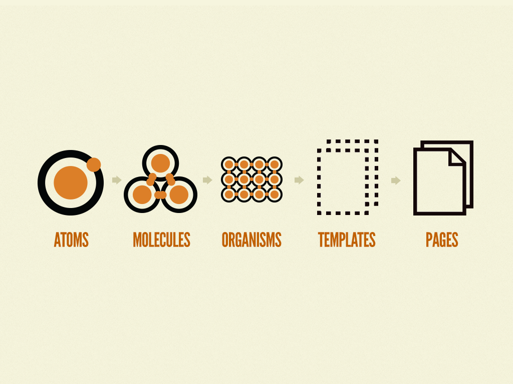

Figma Design System
I’m not allowed to disclose specifics for products from my company due to a non-disclosure agreement. Everything here stays generalized.
The Problem
Explore Digits was building a web application to present to potential clients. The application had been developed without UX input and was based on an older website. It needed a clearer visual identity and further work on its features and user flows.
I was tasked with creating the design system and exploring how the application could better support different use cases. The goal was to make it feel like an Explore Digits product and prepare it for potential client opportunities.
The How of Solving It
I started by going through the application and talking with the developers and project manager about its purpose, existing features, and possible uses.
The main feedback was that the application still looked too similar to the website it had been based on. We needed to establish our own direction while working with what had already been built.
I used Figma to create the design system and worked closely with a developer to apply it to the application over several months.

Brainstorming
At the same time, I was working with a teammate on the Explore Digits company website. That project helped us establish a color palette and a general visual identity that we could carry across products.
For the application, I used navy from the original company website and a teal accent pulled from the logo. I started with the button component, then gradually expanded the system as we identified other components the application needed.
The goal was to create a consistent foundation that could support new features without having to make the same design decisions on every page.

Prototyping
I organized the Figma file using an atomic design structure, with variables applied to the base components. Those components could then be combined into larger patterns and templates while keeping the same colors, sizing, and styles.
I worked with the developer to update the application in stages. Figma’s Dev Mode gave him access to component measurements and color values, which helped make the handoff more specific.
Updating the existing application gradually let us keep working with its current features while discussing new use cases. It also meant the design system continued to develop alongside the product instead of being completed before implementation started.

Testing and Iterating
After the initial update, Explore Digits began working with another company on a collaborative version of the product. We used the existing application as a starting point and adapted it to their needs.
Many of the requested features were already available, but some needed to be added or expanded. I worked with my teammate on a more developed version of a feature we had previously explored, using feedback from the partner team to refine the process.
We also adjusted the design system to give this version its own visual direction. This gave us an opportunity to adapt the existing foundation rather than start over. The work described here does not establish whether the changes improved usability or helped secure clients.
Lessons Learned
This project helped me understand how a design system develops in practice. In college, I had usually followed a defined design process. On this project, design, implementation, and feedback happened alongside each other.
I spent a lot of time building the Figma system and updating it as decisions changed. That taught me how components and variables worked, but keeping the design files and application aligned became time-consuming for a two-person design team.
I later shifted toward a workflow that used less Figma and more direct collaboration in code, with AI assistance. That did not remove the need for design decisions. The component structure and consistency principles I learned on this project became the foundation for that later approach.